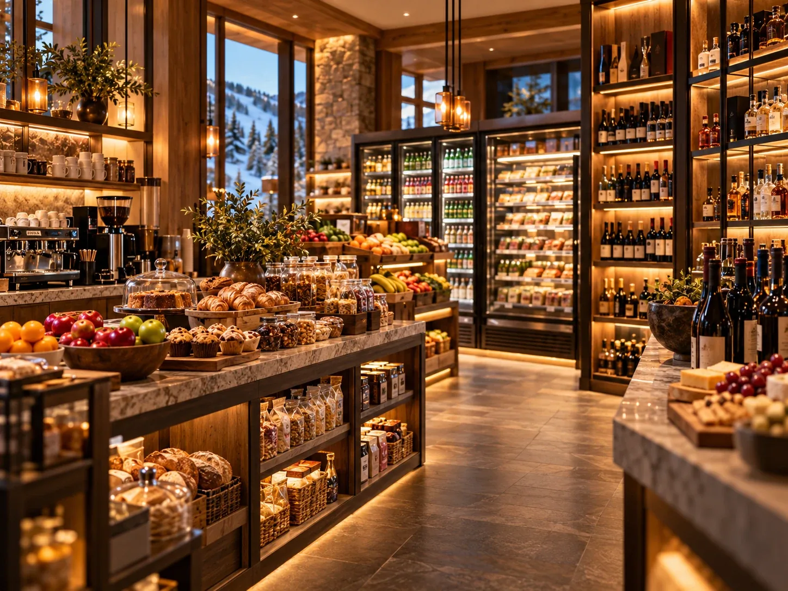

The single most useful logistical decision of a self-catering ski week is where and when you do the big shop. Getting it wrong costs an afternoon of the holiday.

If you have a kitchen, you need it stocked before the first morning. There are three ways to manage that and one of them is clearly best.
Shop on the way in
The road from Salt Lake City passes full-size supermarkets before you reach the resort. Stopping once, on the way in, with the whole group and a vehicle already loaded, is the efficient version.
The alternative is arriving, unpacking, realising there is no milk, and going back out. That is an hour of the first evening and it happens to a lot of people.
If you are taking a private transfer, ask whether the driver will stop. Many will, and it costs little to arrange in advance.
Delivery
Grocery delivery works in the Park City area and solves the problem without a car. Order ahead for the afternoon you arrive, and check with your accommodation about where a delivery can be left and whether anybody needs to receive it.
For a group without a car this is usually the best answer. See also whether you need a car.
The resort marketplace
Resort shops are for what you forgot. Milk, coffee, snacks, a bottle of wine, the thing a child will only eat. They are convenient and priced for convenience.
Treating one as your weekly supermarket for eight people is a way to spend a surprising amount of money on basics.
What to actually buy
Plan a few meals rather than all of them. For a ski week the useful list is short.
- Breakfast, seven days of it. The highest-value thing in the trolley. Eggs, bread, cereal, fruit, coffee, whatever the group actually eats in the morning.
- Three or four dinners, built around things that cook in one pan while people take turns in the shower.
- Lunch materials, if you plan to come back at midday. Soup and bread beats a mountain restaurant queue during a peak week.
- Snacks for pockets. Children ski better with something in a pocket, and on-mountain food is expensive.
- Drinks. Utah has its own rules about where alcohol is sold, so if that matters to the group, sort it out deliberately rather than assuming the supermarket covers it.
Buy more water than seems reasonable. At 7,000 feet, in dry mountain air, dehydration is the most common cause of a bad first day. More in the altitude guide.
Common questions
Where do you buy groceries near Canyons Village?
Full-size supermarkets sit on the route in from Salt Lake City and in the Park City area. The most efficient approach is one large shop on the way in from the airport, before you reach the resort.
Is there grocery delivery in Park City?
Yes, delivery services operate in the area. Order for the afternoon you arrive and check with your accommodation about where deliveries can be left.
Can I buy everything at the resort shop?
You can, but resort marketplaces are priced for convenience and suit forgotten items rather than a week of food for a group.
The villa this guide comes from
We own a Premier Two-Bedroom Villa inside Westgate Park City Resort, in Canyons Village. It is 1,100 square feet, two king bedrooms and two queen sleeper sofas, so it sleeps eight in one unit. Full kitchen with a centre island, two bathrooms, in-unit laundry, and a short walk to the Red Pine Gondola.
It is available for Presidents' Week 2027, 13 to 20 February, and we rent it ourselves rather than through an agency.